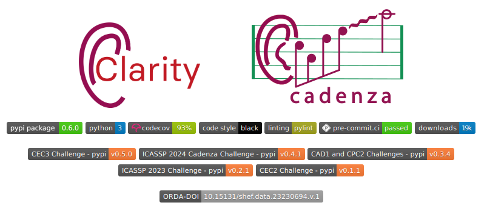

The Cadenza codebase#
This tutorial walks you through the process of installing the Clarity/Cadenza Python package.
Download and install the Clarity/Cadenza Python package#
Clarity and Cadenza challenges tools can be found at the Clarity GitHub website. The tools are available as a Python package and can be installed using pip.
{kind=link}
Tag policy#
The Clarity/Cadenza package is versioned using tags. The tag policy is as follows:
The
mainbranch is the development branch. This branch contains the latest version of the codeEach
tagcorresponds to a specific challenge.
Challenge |
Tag Version |
|---|---|
CAD2 |
v0.6.1 |
ICASSP 2024 |
v0.4.1 |
CAD1 |
v0.3.4 |
To work with the Clarity/Cadenza projects, we recommend to create a clean Python environment.
You can create a new environment using conda as:
print("Creating the environment...")
conda create --quiet --yes -n clarity python=3.10
print("Activating the environment...")
conda activate clarity
print("Cloning git repo...")
git clone --quiet https://github.com/claritychallenge/clarity.git
This will install the last version of PyClarity. To install a tagged version, for example, v0.6.0, you can clone the repository as:
git clone --depth 1 --branch v0.6.0 https://github.com/claritychallenge/clarity.git
This will have made a directory called clarity storing the repository code.
Now we can install the Clarity tools.
print("Changing directory...")
cd clarity
print("Installing Clarity tools")
pip install -e .
🎉 Congratulations!!! 🎉 Now you are ready to start working on Cadenza challenges.